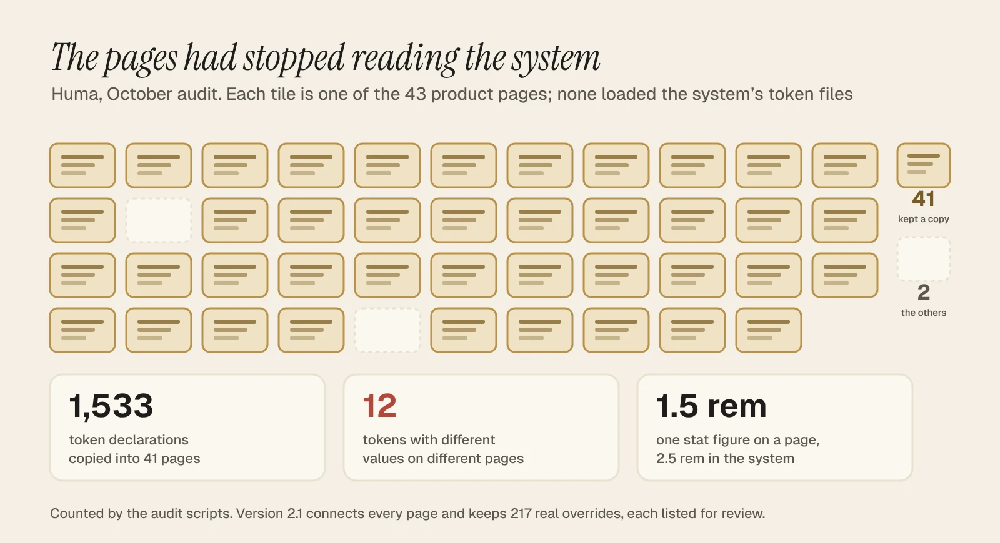

Unera · Jun – Oct 2026 · 7 min read
Three design systems on one spine. The audit showed the pages had stopped reading it, so version 2.1 connects them.
Why this case is here: Systems thinking at lead level: a shared spine, rules the tokens enforce, and an honest audit of my own system.
41 of 43 pages kept their own copy of the tokens. Version 2.1 connects them, and 104 of 107 screenshots match exactly.
In-flight products · systems v2.1, products with engineering
- Problem. Unera has three products for three audiences: a consumer wallet, a stablecoin issuance portal and an internal operations console. Each needed its own system, but money had to mean the same thing across all three. And a system only counts if the product actually uses it.
- What I did. Built and maintained three design systems on one shared spine: Huma (147 tokens, 11 components), Stablecoin (132 tokens, 19 components) and Admin (102 tokens, 10 components). Wrote the rules that the tokens enforce. In October I audited all three against the product with AI help, fixed what had drifted, and published review copies.
- Result. The audit showed that the consumer pages had stopped reading the system. 41 of 43 pages kept their own copy of the tokens, and 12 tokens had different values on different pages. Version 2.1 connects every page to the shared tokens and replaces 1,194 hard-coded colours. 104 of 107 before-and-after screenshots match exactly, and the 3 that differ are checked. The three products built on these systems scored 81, 83.5 and 81 on the System Usability Scale in testing. None has launched yet.

The story in 8 chapters · 7 min read
- 01A wallet, an issuer and a console need different systems, and the same money colours.
- 02Each system has a few rules that the tokens enforce, so a review doesn’t depend on someone remembering them.
- 03Client feedback went into the system, so a fix landed on every page that used it.
- 04In October I checked whether the product still listened to the system. Mostly it didn’t.
- 05Version 2.1 changes what the product reads, not how it looks.
- 06Results
- 07How I led
- 08What I'd do differently
- UI/UX designer, promoted to Lead Product Designer (contract); led a part-time junior designer
- Product owner, QA and spec owner, 2 back-end and 2 front-end engineers, 1 part-time junior designer
- Jun – Oct 2026
- In-flight products · systems v2.1, products with engineering
- Design systems on one spine3Record
- Copied token declarations removed1,533Record
- Screenshots unchanged after v2.1104 of 107Record
01 / 08 · The spine
A wallet, an issuer and a console need different systems, and the same money colours.

The three products serve different people. A Huma user sends, swaps and gives to community centres. A Stablecoin Portal user issues and redeems hUSD, checking the reserve behind it before they trust it. An operator in the Admin console searches, retries, approves and audits all day.
One system for all three would have been too soft for the console or too cold for the wallet. Three unrelated systems would have let the same thing mean different things. On a support call, the operator and the customer would describe the same transaction differently.
So I kept a small shared spine and let everything else vary:
- Dark institutional chrome and one grotesk in all three, so it is always one company. The chrome is Deep Blue in Huma and Admin. The Stablecoin Portal goes near-black, which gives the issuer a colder, more audited feel.
- Money colours that never change. Money-in green is the same value in all three systems. Money-down red is too, after v2.1. Neither colour is ever used for decoration.
- One palette for reserve asset classes, shared by the Stablecoin Portal and the Admin console, so a reserve chart reads the same to a customer and to the operator checking it.
Decision
One system or three
- Options
- One system with product themes, or three systems that share a spine
- We chose
- Three on a spine. The console needs 38 px rows and mono IDs, and the wallet needs warmth and room. Forcing them into one component set would have meant overrides everywhere. That is the drift I later found anyway.
02 / 08 · The rules
Each system has a few rules that the tokens enforce, so a review doesn’t depend on someone remembering them.

A rule that lives in a slide gets forgotten. I put each one where the work happens, in the token or the component.
- Huma: no product gradients. The brand guide has gradients for marketing. The product uses solid fills, so a balance never looks like an advert.
- Stablecoin: proof is a colour. Verified Teal means on-chain proof, and nothing else uses it. Signal Yellow, the portal's accent, appears only on dark surfaces, where it passes contrast.
- Admin: three paths per page. No module went to engineering without its happy, error and edge states. Tables page after ten rows, with the same footer everywhere. Every risky action takes a reason code.
- Everywhere: a state switcher in every prototype page, so QA and the client could see the error and edge states without breaking anything.
Decision
What to do with the brand gradients
- Options
- Use the brand guide's gradients in the product, or keep them for marketing
- We chose
- Marketing only. We kept the brand guide unchanged on purpose and changed what the product does with it. The cost is a naming problem, which chapter 4 comes back to.
03 / 08 · The feedback
Client feedback went into the system, so a fix landed on every page that used it.
- 17
- change notes in the Huma system alone
- RecordAugust to October
- 9–14 in · 6.1 in
- target devices set by the client’s product lead
- RecordBecame a responsive rule
- 23
- batches of mobile feedback, mostly about density
- RecordBecame a written mobile rule set
From August to October, the client's product team sent feedback in batches, mostly in threads and tickets. I logged each round as a change note in the system: what was asked, what changed, and what was deliberately left alone. The Huma system alone has 17 of these notes.
Two of them changed the system rather than a single screen. In late August, the client's product lead set the target devices: computers and tablets from 9 to 14 inches, and phones from 6.1 inches. That became a responsive rule, not a one-off fix. In September, 23 batches of mobile feedback turned out to be mostly about density, so the repeat issues became a written mobile rule set.
A part-time junior designer joined in June and drew the error and edge states for all three products. I reviewed those screens against the written rules, not against my own taste.
04 / 08 · The audit
In October I checked whether the product still listened to the system. Mostly it didn’t.

Before publishing anything, I audited all three systems against the product. I used Cursor and Claude to write and run the checks, and I decided what counted as a problem and what to fix. Scripts checked every token, every var() reference, every hard-coded colour and every text and background pair against WCAG AA. Then I took 107 screenshots before the fixes and compared them with the same screenshots after.
What I found, by system:
- Huma. None of the 43 product pages loaded the system's token files. 41 of them kept their own copy of the tokens: 1,533 declarations in all. 12 tokens had different values on different pages. One example: a stat figure was 1.5 rem on one page and 2.5 rem in the system. The "gradient" tokens meant a gradient in the brand guide and a solid fill in 39 pages.
- Stablecoin and Admin. The component pages were blank outside the design tool, because the export left out the component bundle.
- Contrast. Admin's tertiary text, used for timestamps and table meta, was 2.7:1 on the canvas. Money-down red was just under 4.5:1 on grey in two systems.
- Small breaks. Four tokens were used but never defined, so their borders and shadows never drew.
Decision
How to fix 1,533 copied tokens without breaking 43 pages
- Options
- Rebuild the pages on the system, or connect them and remove only exact copies
- We chose
- Connect and remove exact copies. Each page now loads the shared tokens and keeps only values that are really different: 217 overrides, each listed for review. I proved nothing moved by matching screenshots, not by reading the code.
The three systems, as a place
Three systems, one spine.
A wallet, an issuer portal and an operator console, each with its own system. The dark chrome, the type and the money colours are shared.
41 of 43 pages kept their own copy.
1,533 copied declarations, and 12 tokens with values that disagreed from page to page.
Version 2.1 connects them.
Every page loads the shared tokens, and 104 of 107 screenshots match exactly. The blocks are an illustration, not data.
- Three systems, one spine. A wallet, an issuer portal and an operator console, each with its own system. The dark chrome, the type and the money colours are shared.
- 41 of 43 pages kept their own copy. 1,533 copied declarations, and 12 tokens with values that disagreed from page to page.
- Version 2.1 connects them. Every page loads the shared tokens, and 104 of 107 screenshots match exactly. The blocks are an illustration, not data.
05 / 08 · The fix
Version 2.1 changes what the product reads, not how it looks.
October audit
- 41 of 43 Huma pages kept their own copy of the tokens
- Admin tertiary text at 2.7:1 on the canvas
- Component pages blank outside the design tool
- Network colours mixed into the brand palette
Version 2.1
- Every page loads the shared tokens; 217 real overrides listed
- Tertiary text at 4.6:1
- Bundles rebuilt; the six component pages render
- Network colours in their own file
- Every Huma page loads the shared tokens. 1,194 hard-coded colours across the three products now point at the token that holds the same value.
- Admin tertiary text is now 4.6:1, and money-down red is a touch darker in all three systems. The brand red stays as it was for fills. The text that needed fixing follows the corrected tokens automatically, because it now reads them.
- The missing component bundles are rebuilt, so the six blank component pages now render on their own.
- Network colours (Ethereum, Base, MetaMask) moved into their own file, out of the brand palette.
104 of 107 screenshots match pixel for pixel. Two of the other three are animations that differ on every run. The third is a badge on the Payment methods page that finally shows the border its page always asked for.
Decision
What to leave for version 3
- Options
- Fix everything now, or ship the safe changes and list the rest
- We chose
- Ship and list. Renaming Stablecoin's near-black, which is still called Deep Blue, touches about 2,200 references. Adopting the unused spacing scale changes layout. Both are in the audit as open items with their size.
06 / 08
Results
- 3 systems, 381 tokens and 40 components, all documented with specimen cards. Record, v2.1 counts.
- 1,533 copied token declarations removed from 41 pages. 1,194 hard-coded colours swapped for tokens. Record, from the audit scripts.
- 104 of 107 before-and-after screenshots identical. The other three are explained. Record.
- 81, 83.5 and 81 System Usability Scale scores for Huma, Stablecoin and Admin. Tested, n=6, 5 and 5, on prototypes at the end of design.
Read these carefully. The usability scores are for the products, not for the systems. A design system isn't something users score. The audit numbers count code, not people. None of the products is live, so there's no adoption data from engineering yet. When they launch, I'll measure how many shipped screens use the tokens directly.
Review copies: Huma · Stablecoin · Admin.
07 / 08
How I led
- Set the shared spine and kept it small. Three things are fixed across the family, and everything else belongs to the product.
- Wrote the rules into the tokens. Rules about gradients, proof colour and states were enforced in the system, not left in a deck.
- Turned feedback into system changes. Every round became a change note, so a fix landed everywhere it applied.
- Gave a junior designer a lane with written rules. The error and edge states for all three products were reviewed against those rules.
- Audited my own system before showing it. I reported what I found, including my own drift, with sizes and screenshots.
08 / 08
What I'd do differently
I built the tokens and then let the pages copy them. It was quicker in June, and by October it meant 1,533 lines that could disagree, and 12 that did. If I started again, I'd connect the first page to the shared token files on day one, and add a check that fails when a page defines a token the system already has.
A design system is only as real as the number of pages that read it.
The review copies use Hanken Grotesk in place of the licensed brand font, and sample figures in place of reserve, fee and portfolio numbers. Unera and Huma are named with the client's written approval.